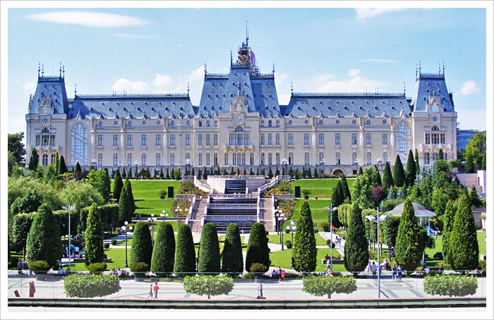

Iasi, historically referred to as Jassy or Iassy is one of the largest cities in Romania. It is located in the Moldavia region and has traditionally been one of the leading centres of Romanian social, cultural, academic and artistic life. It is known as The Cultural Capital of Romania and is a symbol in Romanian history. The historian Nicolae Iorga said "There should be no Romanian who does not know of it". Still referred to as The Moldavian Capital, Iasi is the seat of Iasi County and the main economic centre of the Romanian region of Moldavia. The city has 300.000 inhabitants.
